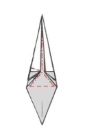

Step 1: Start with the Frog Base
Begin from the frog base (standard origami base). You should have a diamond-like shape.
Step 2: Open the Tip
Lift the top tip of the frog base and open it upwards, creating a taller triangular shape..
Step 3:Repeat Step 2 Three More Times
Perform the same action on the other three sides of the model, opening the tips upwards.
Step 4: Fold a Flap to the Left
Fold one of the flaps over to the left side
Step 5: Fold the Edges to the Center
Fold the left and right edges of the model toward the central axis to narrow the shape.
Step 6: Repeat Step 5 Three More Times

Repeat the same fold on the remaining three sides, bringing the edges to the center.
Step 7:Pinch and Fold the Tip

Pinch the tip of the model and fold it downwards, pressing and flattening it along the side.
Step 8: Repeat Step 7 Three More Times
Perform this action on the other three sides, pinching and folding the tip down.
Step 9:Fold the Edges to the Center Again
Fold the side edges toward the center axis once again to refine the shape.
Step 10: Repeat Step 9 Three More Times
Repeat this fold for the other three sides, narrowing the structure further.
Step 11: Flower Shape after Step 10
After completing step 10, your model should now take on the appearance of a flower base with all sides folded inward.
v
Step 12:Final Shaping of Petals
For each petal, pull the outer edges apart while guiding the tip upwards or downwards as you prefer to form the final petal shapes.